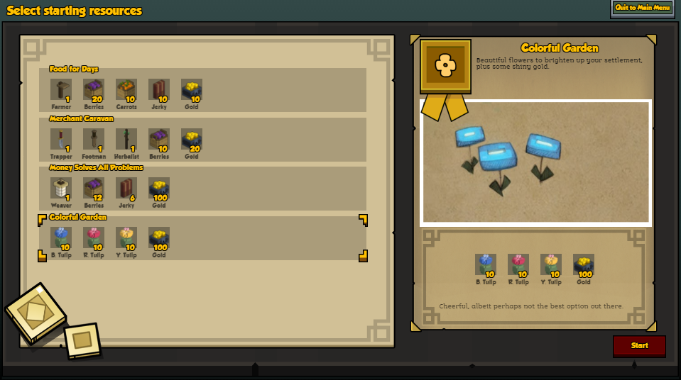
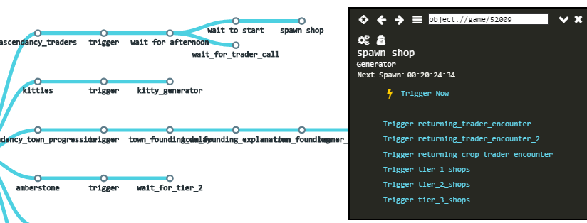
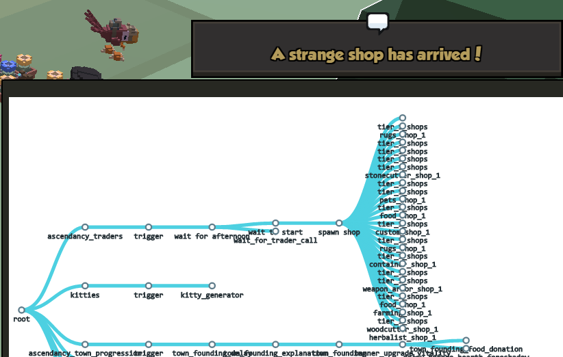
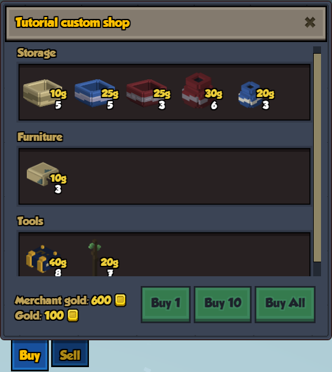

Loadouts
One of the embarkation screens is a list of loadouts to choose from. You can modify this list using mixintos to remove some of the existing loadouts or add your own combinations.
In addition to each loadout, every kingdom starts with a default crafting talisman and a couple of items from a default resource, both defined in their population JSON file.
To add a new loadout:
Make a mixinto to the file that contains the loadouts:
"mixintos": { "stonehearth:loadouts": "file(data/loadouts/loadouts.json)" }Add your custom loadout in the mixinto file:
{ "loadouts": { "colorful_garden": { "ordinal": 5, "display_name": "i18n(my_mod:data.loadouts.colorful_garden.display_name)", "description": "i18n(my_mod:data.loadouts.colorful_garden.description)", "tooltip": "i18n(my_mod:data.loadouts.colorful_garden.tooltip)", "splash": "file(images/colorful_garden/splash.png)", "seal": "file(images/colorful_garden/seal.png)", "content": { "blue_tulip": { "ordinal": 1, "display_name": "i18n(my_mod:data.loadouts.items.blue_tulip)", "type": "entity", "uri": "stonehearth:plants:cactus:tulip:blue", "icon": "/stonehearth/entities/plants/cactus_tulip_plant/blue/cactus_tulip_blue_plant.png", "amount": 10 }, "red_tulip": { "ordinal": 2, "display_name": "i18n(my_mod:data.loadouts.items.red_tulip)", "type": "entity", "uri": "stonehearth:plants:cactus:tulip:red", "icon": "/stonehearth/entities/plants/cactus_tulip_plant/red/cactus_tulip_red_plant.png", "amount": 10 }, "yellow_tulip": { "ordinal": 3, "display_name": "i18n(my_mod:data.loadouts.items.yellow_tulip)", "type": "entity", "uri": "stonehearth:plants:cactus:tulip:yellow", "icon": "/stonehearth/entities/plants/cactus_tulip_plant/yellow/cactus_tulip_yellow_plant.png", "amount": 10 }, "gold": { "ordinal": 4, "display_name": "i18n(stonehearth:data.loadouts.items.gold)", "type": "gold", "icon": "/stonehearth/data/loadouts/images/items/gold.png", "uri": "stonehearth:loot:gold", "amount": 100 } } } } }
We add an entry with a custom identifier inside "loadouts". The properties are self-explanatory. The "splash" and the "seal" are the images that appear on the right when we select the loadout. The "tooltip" is the text that appears at the bottom of the selected loadout on the right.
If we want to add some amount of gold, we use "type" : "gold", instead of "type" : "entity".
Sometimes the "display_name" of the items will be long and not fit into the UI, so we can use some custom abbreviated names here: 
To remove an existing loadout, use mixintypes.
Example mod from a community member that adds many loadouts: Specialized Loadouts
Shops
Shops in the game are managed through encounters. We can also prevent an item from being buyable or sellable.
For example, these are the net worth properties inside the "entity_data" of stonehearth/entities/furniture/wooden_chair/wooden_chair.json:
"stonehearth:net_worth": {
"value_in_gold": 4,
"rarity": "common",
"shop_info": {
"buyable": true,
"sellable": true,
"shopkeeper_level": 1,
"shopkeeper_type": "caravan"
}
}
The "value_in_gold" is the money we receive when we sell this item in a shop (can be higher depending on item quality or town bonuses). It's also the contribution to the town's net worth (non-resource and non-edible items, plus buildings, crops and pastures contribute to the total net worth of your town).
By default, the shopkeeper will sell items at their value_in_gold * SALE_MULTIPLIER. This multiplier is defined in constants.json, under the "score" : { "shop" : {} } constants, so we can change it.
The "rarity" is used to determine the rarity of the items in the shop. Possible values are:
"junk" / "common" / "uncommon" / "rare"
Inside the "shop_info" we can determine if this item should be "buyable", "sellable", and if so, the "shopkeeper_level" of the shops that can sell it. The "shopkeeper_type" is a legacy field not used any more. It can be omitted.
All shops have a small chance to sell items of fine quality (but not of excellent nor mastercraft quality), if those items have this:
"stonehearth:item_quality": {
"variable_quality": true
}
inside their entity_data (this property also allows crafters to craft higher quality versions of the item, if they have unlocked that job perk).
When we reach a new town tier, new shops become available (based on the shopkeeper_level), but old shops can still appear (with less chance). Higher tier shops will contain items with a shopkeeper level that's the same or less than the level specified for the shop.
Let's add a new shop to the list of tier 1 shops so that it can randomly appear in the game:
Copy
stonehearth/data/gm/campaigns/trader/arcs/encounters/tier_1_shops/stonecutter_shop_1.jsonto your mod.Rename it to
custom_shop_1.json, for example, and let's edit the fields:"type": "encounter" -- this file represents an encounter.
"encounter_type": "shop" -- the encounter type is "shop".
"unique": true -- this encounter is unique, only one of this kind can run at the same time.
"in_edge": "custom_shop_1" -- here we use the encounter name that we'll mixinto in the list of encounters for the "trader" arc (see next step).
"shop_info": {} -- the parameters for the shop:
"title" -- a title that will be shown as the shop notification.
"name" -- the name for the shop, it will appear at the top of the shop window.
"inventory": {} -- the contents of the shop:
"shopkeeper_level": 1 -- the items of this shop have this shopkeeper level in their entity_data's net worth info as explained above.
"shopkeeper_gold": 600 -- the maximum gold that the shopkeeper has to buy items from you. It might increase depending on town bonuses etc. Normally for your items to appear in the 'Sell' tab of the shop they must be inside a storage or stockpile.
"overall_price_multiplier": 2 -- optional field. If we include it, all items in this shop will be sold at (value_in_gold * SALE_MULTIPLIER) * overall_price_multiplier.
"entries": [] -- an array of objects describing the contents of the shop. There's two types of entries, we can add as many as we need:
{ "items_matching": { "clay_stuff": { "category": [ "furniture", "storage" ], "material": [ "clay" ] } }, "quantity": { "min": 0, "max": 6 } }In this one, we have an "items_matching" key, inside which there's an identifier. Inside the identifier, we have "category", which is a list of categories from the catalog info, and optionally "material", which is a list of tags from the material tags of the items.
Then, we have another entry with the "quantity", which will be random between the "min" and "max" values for each item that matches the above.
The shop will have all the items from the game that match one of these categories AND have the material in their material_tags, if we declared that key. Currently there's no list with all the categories used in the game, but you can check different items to find out their categories.
The other type of entry is this:
{ "items": [ "stonehearth:cleric:talisman", "stonehearth:herbalist:talisman" ], "quantity": { "min": 5, "max": 10 } }An "items" list which includes aliases of items, and the "quantity" for them, defined like above. This way we can ensure that certain items will appear in our shop regardless of their categories (but make sure they are buyable).
Optionally, we can include this key below "quantity" for any of the entries:
"price_multiplier": 3This will make the items from this particular entry be sold at (value_in_gold * SALE_MULTIPLIER) * price_multiplier.
Add a mixinto to
caravan_shops_arc.json:"mixintos" : { "stonehearth/data/gm/campaigns/trader/arcs/caravan_shops_arc.json" : "file(data/gm/campaigns/trader/arcs/caravan_shops_arc.json)" }The mixinto will look like this:
{ "encounters": { "custom_shop_1": "file(encounters/tier_1_shops/custom_shop_1.json)" } }Add another mixinto for
tier_1_shops.jsonin your manifest:"mixintos" : { "stonehearth/data/gm/campaigns/trader/arcs/caravan_shops_arc.json" : "file(data/gm/campaigns/trader/arcs/caravan_shops_arc.json)", "stonehearth/data/gm/campaigns/trader/arcs/encounters/tier_1_shops/tier_1_shops.json" : "file(data/gm/campaigns/trader/arcs/encounters/tier_1_shops/tier_1_shops.json)" }The mixinto will look like this:
{ "out_edge": { "out_edges": [ { "out_edge": "custom_shop_1", "type": "weighted_edge", "weight": 1 } ] } }Finally, let's check that our shop can appear in the game.
First make sure that your town goes through the banner celebration so that we ensure we are on tier 1.
Then, open the campaign browser, click on the node names of the trader campaign encounters to open the small window and click on 'Trigger Now' until you reach the 'spawn shop' encounter.
Since the shops are random and we used the same weight for our custom shop, we'll need to trigger the encounter a bunch of times and close the other shops until we see it appear:  
Rayya's children has a different trader campaign, so we'll need to add another mixinto in their arc in order to include our custom shop for them too. Northern alliance reuses the Ascendancy one. 